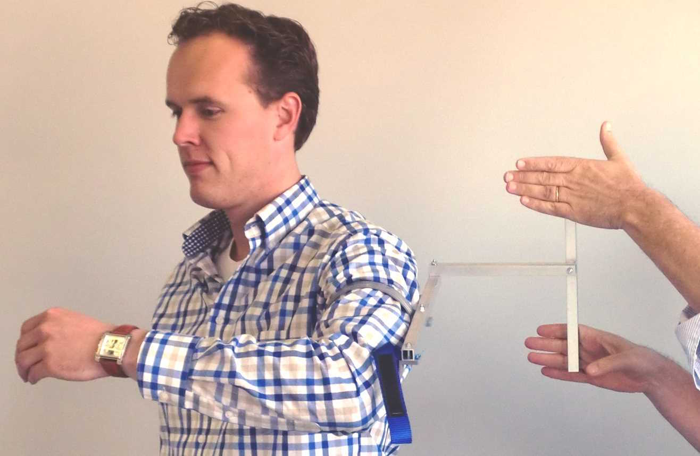
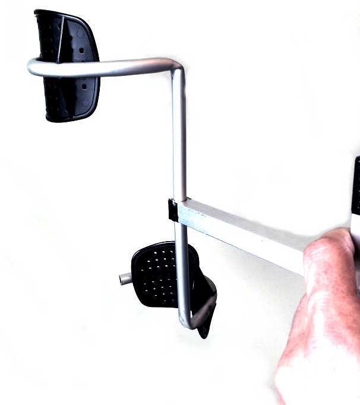

The Armbot very deliberately applies only a pure torque to the upper arm as well as to the forearm, and no lifting force whatsoever. This idea strikes many people as counterintuitive. Almost all rehab devices assist elbow flexion by lifting the weight of the forearm more or less near the wrist, and abduction by lifting the weight of the upper arm, maybe by an upper arm cuff some short distance above the elbow.
The tacit understanding is that it would be painful to apply torques to the shoulder- and elbow joints, and that it would help the patient to be relieved of the weight of passive limbs hanging from the shoulder and elbow.

Figure 1 : Applying a pure torque to the upper arm.
Tackling the weight argument first, it does not make much sense to relieve the weight of the arm on a patient who came in with the arm hanging from the shoulder in daily life in the first place. If this were painful or problematic, they would carry their arm in a sling. If this is not the case, then in fact we should expect discomfort upon lifting the weight of the arm, because this will unnaturally lift the shoulder.
The joint torque argument is more subtle. It would definitely be painful to wrench the shoulder into abduction with a local torque, emulating the muscle forces. But there is no need for that. A torque or "couple" ( two opposing forces some distance apart ) can be applied anywhere on an object. A torque has no point of application.
For most people this takes some convincing, but it is nevertheless true. Take the case of a flywheel floating in space, like in Figure 2. Now apply a torque anywhere on this flywheel, say in a point E. There is no net force on the flywheel, so its center of mass M will not accelerate. It will simply remain in place. There will be an angular acceleration : the flywheel will start rotating. But it can only rotate about its center of mass M, definitely not around the point E. This is the basis of devices like the ultracentrifuge.
The confounding issue is that a pure torque is not easy to apply. As soon as the object starts rotating, the point E will start to move. If a wrench is applied at E to create the torque, it not easy to imagine following the wheel around without exerting some side force on the wrench, instead of maintaining a pure torque. This is why a car wheel must be blocked before trying to loosen the wheel bolts.
TBW Create figure for the flywheel etc.
Figure 1 shows a simple test of the torque-only idea. A "couple" ( two opposing forces ) is applied to the upper arm by the simple tool of Figure 3. The pads are placed somewhere halfway on the upper arm, but the location really does not matter. The subject holds the arm fully relaxed, neither helping nor opposing the motion.
No net force is applied to the upper arm, yet the arm neatly rises in abduction, without the subject feeling any pain or discomfort in the shoulder. The effect must be felt to be believed.
Yet it makes perfect sense : in real life, lifting the arm requires no change in net ( vertical ) force on the shoulder. The weight of the arm is always suspended from the shoulder, abduction or not. The torque which is normally applied by muscles near the shoulder pivot point is now applied by soft pads some distance apart on the upper arm. Provided these points only receive two opposite forces and are not fixed in space, the upper arm will simply rotate around the shoulder pivot, wherever it may be at that time.
The problem is in applying a pure torque to the stick carrying the two pads. This is made easier by driving it from some distance away via a longish torque tube, the further away the better.
The same test can be done to the elbow. By applying the "couple" to the forearm, the forearm will rise in elbow flexion, without any change in force in the elbow or the shoulder. After all, the weight of the forearm is always carried by the shoulder in normal life too.

Figure 3 : Upper arm pure torque tool.